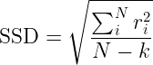
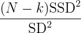
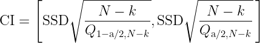

If those measurements come from a normal parent population with standard deviation SD, then the quantity
has a chi-square distribution with N-k degrees of freedom (e.g., Lu 1960). In this case, the confidence interval (CI) on SD at a confidence level of 100(1-a) per cent is given by
where Q is the quantile function of the chi-square distribution with N-k degrees of freedom.